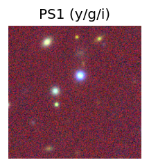
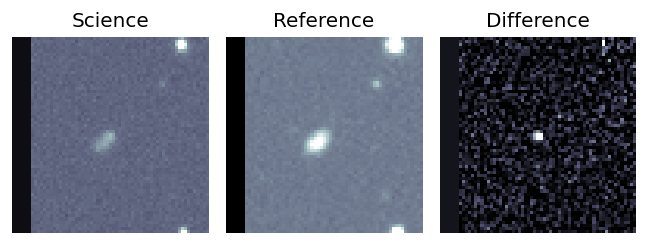
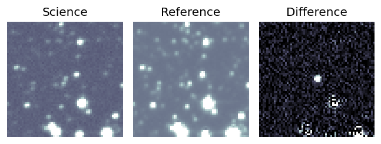
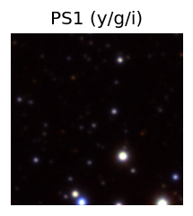
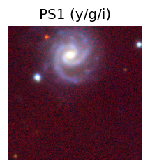
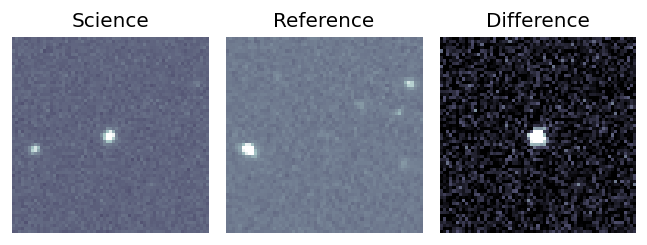

Candidate List 20250923 Previous Day Next Day Section 1: New Sources (age<1d) Cosmological Afterglow
Section 2: Old (1-5d) sources observed last night placeholder
Section 1: New Afterglow/FBOT Cands Last Night (7)
1. ZTF25absyztd (FBOT?) [Back to Top] [Share] [Trigger Swift] [Fritz ] [Lasair ]RA, Dec: 99.32755, 50.60343 6h37m18.61s, 50d36m12.34sGalactic (l, b): 164.84957, 18.51622 ext(g-r) = 0.117LegacySurvey: 1 sources in 3 arcsec Closest: d = 0.48 arcsec, 231.7 deg (east of north) photoz=0.21 (68% bounds 0.03, 0.56), type=PSF peak abs mag = -21.3 (68% bounds -16.68, -23.8)
2. ZTF25absznsm (Afterglow?) [Back to Top] [Share] [Trigger Swift] [Fritz ] [Lasair ]RA, Dec: 101.77661, 50.5926 6h47m6.39s, 50d35m33.37sGalactic (l, b): 165.41342, 19.97677 ext(g-r) = 0.112LegacySurvey: 1 sources in 3 arcsec Closest: d = 0.24 arcsec, 219.4 deg (east of north) photoz=0.08 (68% bounds 0.07, 0.09), type=DEV peak abs mag = -19.45 (68% bounds -19.13, -19.8)
3. ZTF25abszuhz (FBOT?) [Back to Top] [Share] [Trigger Swift] [Fritz ] [Lasair ]RA, Dec: 101.0957, 48.04061 6h44m22.97s, 48d 2m26.21sGalactic (l, b): 167.80751, 18.70909 ext(g-r) = 0.11 LegacySurvey: 1 sources in 3 arcsec Closest: d = 1.14 arcsec, 12.5 deg (east of north) photoz=0.61 (68% bounds 0.31, 0.97), type=REX peak abs mag = -23.03 (68% bounds -21.33, -24.29)
4. ZTF25abszurg (FBOT?) [Back to Top] [Share] [Trigger Swift] [Fritz ] [Lasair ]RA, Dec: 102.64208, 48.56981 6h50m34.10s, 48d34m11.31sGalactic (l, b): 167.64236, 19.85525 ext(g-r) = 0.091LegacySurvey: 1 sources in 3 arcsec Closest: d = 0.74 arcsec, 146.0 deg (east of north) photoz=0.11 (68% bounds 0.02, 0.2), type=PSF peak abs mag = -20.59 (68% bounds -16.73, -22.06)
5. ZTF25abszwim (FBOT?) [Back to Top] [Share] [Trigger Swift] [Fritz ] [Lasair ]RA, Dec: 103.6084, 46.59885 6h54m26.02s, 46d35m55.85sGalactic (l, b): 169.84921, 19.83381 ext(g-r) = 0.088LegacySurvey: 1 sources in 3 arcsec Closest: d = 0.04 arcsec, 354.1 deg (east of north) photoz=0.1 (68% bounds 0.08, 0.1), type=SER peak abs mag = -19.74 (68% bounds -19.47, -19.9)
6. ZTF25abszwiy (FBOT?) [Back to Top] [Share] [Trigger Swift] [Fritz ] [Lasair ]RA, Dec: 103.56915, 46.71813 6h54m16.60s, 46d43m5.27sGalactic (l, b): 169.71995, 19.84696 ext(g-r) = 0.09LegacySurvey: 1 sources in 3 arcsec Closest: d = 0.24 arcsec, 302.8 deg (east of north) photoz=0.09 (68% bounds 0.06, 0.1), type=SER peak abs mag = -19.28 (68% bounds -18.41, -19.6)
7. ZTF25abszwjk (FBOT?) [Back to Top] [Share] [Trigger Swift] [Fritz ] [Lasair ]RA, Dec: 103.65282, 46.64462 6h54m36.68s, 46d38m40.65sGalactic (l, b): 169.81366, 19.87749 ext(g-r) = 0.087LegacySurvey: 1 sources in 3 arcsec Closest: d = 0.19 arcsec, 276.0 deg (east of north) photoz=0.12 (68% bounds 0.06, 0.15), type=REX peak abs mag = -19.67 (68% bounds -18.21, -20.24)
Section 2: Older Sources Observed Last Night (18)
0. ZTF25abrlwzs (FBOT?) [Back to Top] [Share] [Trigger Swift] [Fritz ] [Lasair ]RA, Dec: 10.67781, 41.19015 0h42m42.67s, 41d11m24.55sGalactic (l, b): 121.16568, -21.65167 ext(g-r) = 0.415PS1: 1 source in 3 arcsec Closest: d = 3.84 arcsec photoz=0.05+/-0.01 peak abs mag = -19.94
1. ZTF25abrvajc (FBOT?) [Back to Top] [Share] [Trigger Swift] [Fritz ] [Lasair ]RA, Dec: 10.61024, 43.04576 0h42m26.46s, 43d 2m44.75sGalactic (l, b): 121.1851, -19.79547 ext(g-r) = 0.083peak abs mag = -18.34 PS1: 1 source in 3 arcsec Closest: d = 3.09 arcsec photoz=0.17+/-0.04 peak abs mag = -20.19
2. ZTF23abcttmt (FBOT?) [Back to Top] [Share] [Trigger Swift] [Fritz ] [Lasair ]RA, Dec: 0.99663, -23.11716 0h 3m59.19s, -23d-7m-1.77sGalactic (l, b): 50.81193, -78.5415 ext(g-r) = 0.024PS1: 1 source in 3 arcsec Closest: d = 0.47 arcsec photoz=0.08+/-0.00 peak abs mag = -19.12
3. ZTF25absboyt (Afterglow?) [Back to Top] [Share] [Trigger Swift] [Fritz ] [Lasair ]RA, Dec: 284.02684, -19.7043 18h56m6.44s, -19d-42m-15.49sGalactic (l, b): 15.73401, -9.83505 WARNING: 3.09 deg from ecliptic plane ext(g-r) = 0.242
4. ZTF25abscwyn (Afterglow?) [Back to Top] [Share] [Trigger Swift] [Fritz ] [Lasair ]RA, Dec: 320.29098, -7.3488 21h21m9.84s, -7d-20m-55.66sGalactic (l, b): 44.48835, -36.5003 ext(g-r) = 0.307LegacySurvey: 1 sources in 3 arcsec Closest: d = 4.67 arcsec, 168.3 deg (east of north) photoz=0.44 (68% bounds 0.32, 0.6), type=REX peak abs mag = -23.86 (68% bounds -23.07, -24.67)
5. ZTF25absdfgk (Afterglow?) [Back to Top] [Share] [Trigger Swift] [Fritz ] [Lasair ]RA, Dec: 314.41245, 13.19928 20h57m38.99s, 13d11m57.42sGalactic (l, b): 60.62934, -20.4443 ext(g-r) = 0.12LegacySurvey: 1 sources in 3 arcsec Closest: d = 3.25 arcsec, 245.3 deg (east of north) photoz=0.03 (68% bounds 0.03, 0.04), type=SER peak abs mag = -16.8 (68% bounds -16.37, -17.51)
6. ZTF25absdjzj (Afterglow?) [Back to Top] [Share] [Trigger Swift] [Fritz ] [Lasair ]RA, Dec: 298.71703, 7.86856 19h54m52.09s, 7d52m6.82sGalactic (l, b): 47.36596, -10.28076 ext(g-r) = 0.166
7. ZTF25absdsrc (Afterglow?) [Back to Top] [Share] [Trigger Swift] [Fritz ] [Lasair ]RA, Dec: 342.92596, 41.29656 22h51m42.23s, 41d17m47.61sGalactic (l, b): 99.95607, -16.17232 ext(g-r) = 0.248PS1: 1 source in 3 arcsec Closest: d = 4.30 arcsec photoz=0.65+/-0.19 peak abs mag = -24.11
8. ZTF25absdsrd (Afterglow?) [Back to Top] [Share] [Trigger Swift] [Fritz ] [Lasair ]RA, Dec: 342.92187, 41.3351 22h51m41.25s, 41d20m6.37sGalactic (l, b): 99.97179, -16.13672 ext(g-r) = 0.256PS1: 1 source in 3 arcsec Closest: d = 7.28 arcsec photoz=0.62+/-0.18 peak abs mag = -23.95
9. ZTF25absdyqi (FBOT?) [Back to Top] [Share] [Trigger Swift] [Fritz ] [Lasair ]RA, Dec: 359.382, -22.00329 23h57m31.68s, -22d 0m-11.86sGalactic (l, b): 52.70599, -76.72486 ext(g-r) = 0.026PS1: 1 source in 3 arcsec Closest: d = 6.50 arcsec photoz=0.05+/-0.08 peak abs mag = -19.54
10. ZTF25abskgbv (Afterglow?) [Back to Top] [Share] [Trigger Swift] [Fritz ] [Lasair ]RA, Dec: 258.72846, 35.51592 17h14m54.83s, 35d30m57.30sGalactic (l, b): 59.11761, 34.12849 ext(g-r) = 0.033 LegacySurvey: 1 sources in 3 arcsec Closest: d = 5.08 arcsec, 5.8 deg (east of north) photoz=0.0 (68% bounds 0.0, 0.02), type=PSF peak abs mag = -12.72 (68% bounds -11.63, -16.11) Consistent with synchrotron, g-r>0!
11. ZTF25absklbq (Afterglow?) [Back to Top] [Share] [Trigger Swift] [Fritz ] [Lasair ]RA, Dec: 322.53029, 0.40436 21h30m7.27s, 0d24m15.70sGalactic (l, b): 54.05512, -34.39636 ext(g-r) = 0.046LegacySurvey: 1 sources in 3 arcsec Closest: d = 2.10 arcsec, 301.2 deg (east of north) photoz=0.07 (68% bounds 0.03, 0.2), type=SER peak abs mag = -18.35 (68% bounds -16.04, -20.61) Consistent with synchrotron, g-r>0!
12. ZTF25abspqxf (FBOT?) [Back to Top] [Share] [Trigger Swift] [Fritz ] [Lasair ]RA, Dec: 42.52676, 1.3532 2h50m6.42s, 1d21m11.53sGalactic (l, b): 172.80233, -49.67086 ext(g-r) = 0.06peak abs mag = -24.59 LegacySurvey: 1 sources in 3 arcsec Closest: d = 0.65 arcsec, 338.0 deg (east of north) photoz=0.43 (68% bounds 0.38, 0.47), type=REX peak abs mag = -24.2 (68% bounds -23.91, -24.45)
13. ZTF25absvboh (FBOT?) [Back to Top] [Share] [Trigger Swift] [Fritz ] [Lasair ]RA, Dec: 356.32967, -0.05342 23h45m19.12s, 0d-3m-12.31sGalactic (l, b): 89.82384, -58.60885 WARNING: 1.41 deg from ecliptic plane ext(g-r) = 0.042LegacySurvey: 1 sources in 3 arcsec Closest: d = 0.65 arcsec, 55.5 deg (east of north) photoz=0.27 (68% bounds 0.26, 0.28), type=SER peak abs mag = -22.74 (68% bounds -22.67, -22.85)
14. ZTF25abswduw (Afterglow?) [Back to Top] [Share] [Trigger Swift] [Fritz ] [Lasair ]RA, Dec: 21.54254, 18.27284 1h26m10.21s, 18d16m22.22sGalactic (l, b): 134.39298, -43.82463 ext(g-r) = 0.105LegacySurvey: 1 sources in 3 arcsec Closest: d = 3.43 arcsec, 180.0 deg (east of north) photoz=0.01 (68% bounds 0.01, 0.03), type=PSF peak abs mag = -15.31 (68% bounds -13.59, -17.41)
15. ZTF25abswxem (FBOT?) [Back to Top] [Share] [Trigger Swift] [Fritz ] [Lasair ]RA, Dec: 14.87482, 34.30997 0h59m29.96s, 34d18m35.89sGalactic (l, b): 124.82667, -28.53212 ext(g-r) = 0.044peak abs mag = -19.48 PS1: 1 source in 3 arcsec Closest: d = 0.15 arcsec photoz=0.19+/-0.01 peak abs mag = -19.69
16. ZTF25abswyll (Afterglow?) [Back to Top] [Share] [Trigger Swift] [Fritz ] [Lasair ]RA, Dec: 7.92804, 42.86418 0h31m42.73s, 42d51m51.03sGalactic (l, b): 119.09062, -19.8604 ext(g-r) = 0.076PS1: 1 source in 3 arcsec Closest: d = 0.82 arcsec photoz=0.60+/-0.11 peak abs mag = -22.35
17. ZTF25absxzba (FBOT?) [Back to Top] [Share] [Trigger Swift] [Fritz ] [Lasair ]RA, Dec: 78.72334, 41.04405 5h14m53.60s, 41d 2m38.58sGalactic (l, b): 166.44214, 1.42941 ext(g-r) = 0.687PS1: 1 source in 3 arcsec Closest: d = 3.75 arcsec photoz=0.09+/-2.09 peak abs mag = -20.04